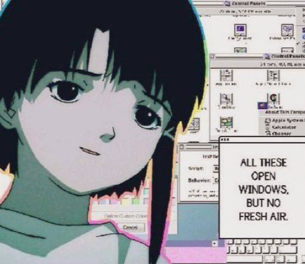

Inspired by The Festival by H. P. Lovecraft and Signalis by rose-engine.
Escape from prison's sea he desires
What felt so real is but a tale of liars
The stars' oppressive conduct to him is clear
A song that we all dance to, but few can hear
Escape's staged, a silent tune he just desires
I love learning. About everything. I want to see, I want to know, I want to understand as much as possible. Not about the mundane things, but things that affect our existence. Things that change the trajectory of our evolution and our place in this world. For example, I want to understand the perspectives of merging the human brain and a computer, an ongoing process that will radically change us and reality as we understand it.
In order to learn more about it, I started studying Computer Science, along with Cognitive Neuroscience, and am planning on studying Computational Neuroscience at a graduate school. I am hoping to work on research on brain-computer interfaces (BCIs), similar to Neuralink. The promises of this technology are both rapturous and dystopian. Access to all human knowledge without using any devices and salvation from neurological disorders, but also a loss of neural data privacy and absolute surveillance. I believe that this technology is the future, and it will shape every aspect of our existence.
Besides that, I want to know history. I am not studying it as my major, but I spend as much time as possible researching why the world we live in is the way it is. It is impossible to fully comprehend the context that surrounds us without knowing the context that existed before us. And besides that, it is just fascinating. I have read many books throughout my life, and not a single fantasy or sci-fi book can compare to the actual records of human history.
Hence, I want to see and understand as much as possible to understand where we are going as a collective. Laplace’s demon can predict the future of every particle in the universe just by knowing its location and trajectory, at least if the world is deterministic. And if we know the position and trajectory of our society, we can predict its future, at least to a degree.
| Monday | Tuesday | Wednesday | Thursday | Friday | |
|---|---|---|---|---|---|
| 10:00 | MATH 121H - Calculus I | MATH 121H - Calculus I | MATH 121H - Calculus I | MATH 121H - Calculus I | Work |
| 10:30 | |||||
| 11:00 | |||||
| 11:30 | Work | HONR 2100 - Modern Legacies | Work | HONR 2100 - Modern Legacies | |
| 12:00 | |||||
| 12:30 | |||||
| 1:00 | ARTH 272H - Renaissance to Contemp Art | CS 2550 - Web Programming I | ARTH 272H - Renaissance to Contemp Art | CS 2550 - Web Programming I | |
| 1:30 | |||||
| 2:00 | |||||
| 2:30 | Work | Work | Work | Work | |
| 3:00 | |||||
| 3:30 | |||||
| 4:00 | HONR 100R - Honors Colloquium | ||||
| 4:30 | |||||
| 5:00 |